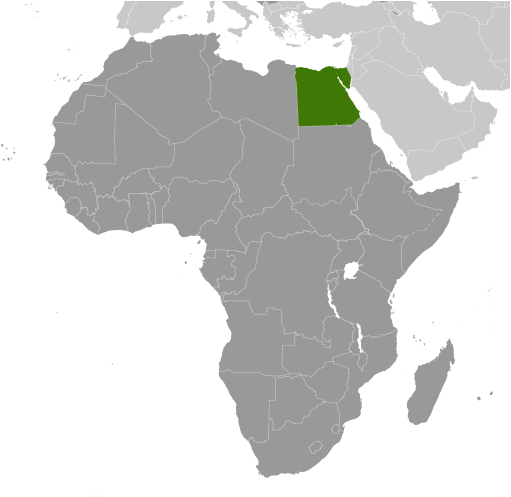
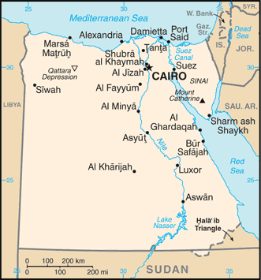
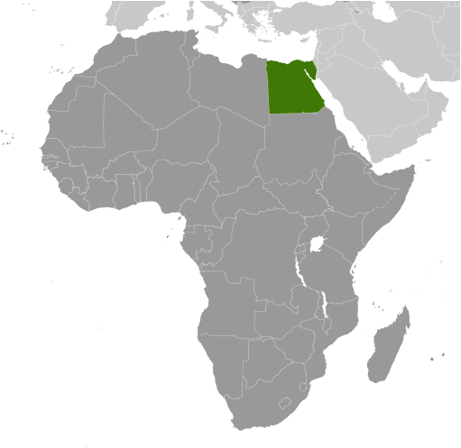
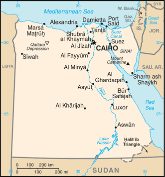

Africa :: EGYPT
Introduction :: EGYPT
-
The regularity and richness of the annual Nile River flood, coupled with semi-isolation provided by deserts to the east and west, allowed for the development of one of the world's great civilizations. A unified kingdom arose circa 3200 B.C., and a series of dynasties ruled in Egypt for the next three millennia. The last native dynasty fell to the Persians in 341 B.C., who in turn were replaced by the Greeks, Romans, and Byzantines. It was the Arabs who introduced Islam and the Arabic language in the 7th century and who ruled for the next six centuries. A local military caste, the Mamluks took control about 1250 and continued to govern after the conquest of Egypt by the Ottoman Turks in 1517. Completion of the Suez Canal in 1869 elevated Egypt as an important world transportation hub. Ostensibly to protect its investments, Britain seized control of Egypt's government in 1882, but nominal allegiance to the Ottoman Empire continued until 1914. Partially independent from the UK in 1922, Egypt acquired full sovereignty from Britain in 1952. The completion of the Aswan High Dam in 1971 and the resultant Lake Nasser have altered the time-honored place of the Nile River in the agriculture and ecology of Egypt. A rapidly growing population (the largest in the Arab world), limited arable land, and dependence on the Nile all continue to overtax resources and stress society. The government has struggled to meet the demands of Egypt's population through economic reform and massive investment in communications and physical infrastructure.Inspired by the 2010 Tunisian revolution, Egyptian opposition groups led demonstrations and labor strikes countrywide, culminating in President Hosni MUBARAK's ouster in 2011. Egypt's military assumed national leadership until a new parliament was in place in early 2012; later that same year, Mohammed MORSI won the presidential election. Following often violent protests throughout the spring of 2013 against MORSI's government and the Muslim Brotherhood, the Egyptian Armed Forces intervened and removed MORSI from power in July 2013 and replaced him with interim president Adly MANSOUR. In January 2014, voters approved a new constitution by referendum and in May 2014 elected Abdelfattah ELSISI president. Egypt elected a new legislature in December 2015, the first parliament since 2012.
Geography :: EGYPT
-
Northern Africa, bordering the Mediterranean Sea, between Libya and the Gaza Strip, and the Red Sea north of Sudan, and includes the Asian Sinai Peninsula27 00 N, 30 00 EAfricatotal: 1,001,450 sq kmland: 995,450 sq kmwater: 6,000 sq kmcountry comparison to the world: 31more than eight times the size of Ohio; slightly more than three times the size of New Mexicototal: 2,612 kmborder countries (4): Gaza Strip 13 km, Israel 208 km, Libya 1,115 km, Sudan 1,276 km2,450 kmterritorial sea: 12 nmcontiguous zone: 24 nmexclusive economic zone: 200 nm or the equidistant median line with Cypruscontinental shelf: 200 nmdesert; hot, dry summers with moderate wintersvast desert plateau interrupted by Nile valley and deltamean elevation: 321 melevation extremes: lowest point: Qattara Depression -133 mhighest point: Mount Catherine 2,629 mpetroleum, natural gas, iron ore, phosphates, manganese, limestone, gypsum, talc, asbestos, lead, rare earth elements, zincagricultural land: 3.6%arable land 2.8%; permanent crops 0.8%; permanent pasture 0%forest: 0.1%other: 96.3% (2011 est.)36,500 sq km (2012)approximately 95% of the population lives within 20 km of the Nile River and its delta; vast areas of the country remain sparsely populated or uninhabitedperiodic droughts; frequent earthquakes; flash floods; landslides; hot, driving windstorms called khamsin occur in spring; dust storms; sandstormsagricultural land being lost to urbanization and windblown sands; increasing soil salination below Aswan High Dam; desertification; oil pollution threatening coral reefs, beaches, and marine habitats; other water pollution from agricultural pesticides, raw sewage, and industrial effluents; limited natural freshwater resources away from the Nile, which is the only perennial water source; rapid growth in population overstraining the Nile and natural resourcesparty to: Biodiversity, Climate Change, Climate Change-Kyoto Protocol, Desertification, Endangered Species, Environmental Modification, Hazardous Wastes, Law of the Sea, Marine Dumping, Ozone Layer Protection, Ship Pollution, Tropical Timber 83, Tropical Timber 94, Wetlandssigned, but not ratified: none of the selected agreementscontrols Sinai Peninsula, only land bridge between Africa and remainder of Eastern Hemisphere; controls Suez Canal, a sea link between Indian Ocean and Mediterranean Sea; size, and juxtaposition to Israel, establish its major role in Middle Eastern geopolitics; dependence on upstream neighbors; dominance of Nile basin issues; prone to influxes of refugees from Sudan and the Palestinian territories
People and Society :: EGYPT
-
97,041,072 (July 2017 est.)country comparison to the world: 14noun: Egyptian(s)adjective: EgyptianEgyptian 99.6%, other 0.4% (2006 census)Arabic (official), English and French widely understood by educated classesMuslim (predominantly Sunni) 90%, Christian (majority Coptic Orthodox, other Christians include Armenian Apostolic, Catholic, Maronite, Orthodox, and Anglican) 10% (2015 est.)Egypt is the most populous country in the Arab world and the third most populous country in Africa, behind Nigeria and Ethiopia. Most of the country is desert, so about 95% of the population is concentrated in a narrow strip of fertile land along the Nile River, which represents only about 5% of Egypt’s land area. Egypt’s rapid population growth – 46% between 1994 and 2014 – stresses limited natural resources, jobs, housing, sanitation, education, and health care.Although the country’s total fertility rate (TFR) fell from roughly 5.5 children per woman in 1980 to just over 3 in the late 1990s, largely as a result of state-sponsored family planning programs, the population growth rate dropped more modestly because of decreased mortality rates and longer life expectancies. During the last decade, Egypt’s TFR decline stalled for several years and then reversed, reaching 3.6 in 2011, and has plateaued the last few years. Contraceptive use has held steady at about 60%, while preferences for larger families and early marriage may have strengthened in the wake of the recent 2011 revolution. The large cohort of women of or nearing childbearing age will sustain high population growth for the foreseeable future (an effect called population momentum).Nevertheless, post-MUBARAK governments have not made curbing population growth a priority. To increase contraceptive use and to prevent further overpopulation will require greater government commitment and substantial social change, including encouraging smaller families and better educating and empowering women. Currently, literacy, educational attainment, and labor force participation rates are much lower for women than men. In addition, the prevalence of violence against women, the lack of female political representation, and the perpetuation of the nearly universal practice of female genital cutting continue to keep women from playing a more significant role in Egypt’s public sphere.Population pressure, poverty, high unemployment, and the fragmentation of inherited land holdings have historically motivated Egyptians, primarily young men, to migrate internally from rural and smaller urban areas in the Nile Delta region and the poorer rural south to Cairo, Alexandria, and other urban centers in the north, while a much smaller number migrated to the Red Sea and Sinai areas. Waves of forced internal migration also resulted from the 1967 Arab-Israeli War and the floods caused by the completion of the Aswan High Dam in 1970. Limited numbers of students and professionals emigrated temporarily prior to the early 1970s, when economic problems and high unemployment pushed the Egyptian Government to lift restrictions on labor migration. At the same time, high oil revenues enabled Saudi Arabia, Iraq, and other Gulf states, as well as Libya and Jordan, to fund development projects, creating a demand for unskilled labor (mainly in construction), which attracted tens of thousands of young Egyptian men.Between 1970 and 1974 alone, Egyptian migrants in the Gulf countries increased from approximately 70,000 to 370,000. Egyptian officials encouraged legal labor migration both to alleviate unemployment and to generate remittance income (remittances continue to be one of Egypt’s largest sources of foreign currency and GDP). During the mid-1980s, however, depressed oil prices resulting from the Iran-Iraq War, decreased demand for low-skilled labor, competition from less costly South Asian workers, and efforts to replace foreign workers with locals significantly reduced Egyptian migration to the Gulf States. The number of Egyptian migrants dropped from a peak of almost 3.3 million in 1983 to about 2.2 million at the start of the 1990s, but numbers gradually recovered.In the 2000s, Egypt began facilitating more labor migration through bilateral agreements, notably with Arab countries and Italy, but illegal migration to Europe through overstayed visas or maritime human smuggling via Libya also rose. The Egyptian Government estimated there were 6.5 million Egyptian migrants in 2009, with roughly 75% being temporary migrants in other Arab countries (Libya, Saudi Arabia, Jordan, Kuwait, and the United Arab Emirates) and 25% being predominantly permanent migrants in the West (US, UK, Italy, France, and Canada).During the 2000s, Egypt became an increasingly important transit and destination country for economic migrants and asylum seekers, including Palestinians, East Africans, and South Asians and, more recently, Iraqis and Syrians. Egypt draws many refugees because of its resettlement programs with the West; Cairo has one of the largest urban refugee populations in the world. Many East African migrants are interned or live in temporary encampments along the Egypt-Israel border, and some have been shot and killed by Egyptian border guards.0-14 years: 33.29% (male 16,720,307/female 15,583,019)15-24 years: 18.94% (male 9,464,262/female 8,919,614)25-54 years: 37.6% (male 18,545,422/female 17,944,582)55-64 years: 5.95% (male 2,861,136/female 2,911,586)65 years and over: 4.22% (male 1,993,248/female 2,097,896) (2017 est.)total dependency ratio: 61.8youth dependency ratio: 53.6elderly dependency ratio: 8.2potential support ratio: 12.2 (2015 est.)total: 23.9 yearsmale: 23.6 yearsfemale: 24.2 years (2017 est.)country comparison to the world: 1642.45% (2017 est.)country comparison to the world: 1929.6 births/1,000 population (2017 est.)country comparison to the world: 404.6 deaths/1,000 population (2017 est.)country comparison to the world: 203-0.5 migrant(s)/1,000 population (2017 est.)country comparison to the world: 125approximately 95% of the population lives within 20 km of the Nile River and its delta; vast areas of the country remain sparsely populated or uninhabitedurban population: 43.3% of total population (2017)rate of urbanization: 1.8% annual rate of change (2015-20 est.)CAIRO (capital) 18.772 million; Alexandria 4.778 million (2015)at birth: 1.05 male(s)/female0-14 years: 1.07 male(s)/female15-24 years: 1.06 male(s)/female25-54 years: 1.03 male(s)/female55-64 years: 0.98 male(s)/female65 years and over: 0.82 male(s)/femaletotal population: 1.05 male(s)/female (2016 est.)22.7 yearsnote: median age at first birth among women 25-29 (2014 est.)33 deaths/100,000 live births (2015 est.)country comparison to the world: 110total: 19 deaths/1,000 live birthsmale: 20.2 deaths/1,000 live birthsfemale: 17.7 deaths/1,000 live births (2017 est.)country comparison to the world: 84total population: 73 yearsmale: 71.6 yearsfemale: 74.4 years (2017 est.)country comparison to the world: 1423.47 children born/woman (2017 est.)country comparison to the world: 4458.5% (2014)5.6% of GDP (2014)country comparison to the world: 1190.81 physicians/1,000 population (2014)0.5 beds/1,000 population (2012)improved:urban: 100% of populationrural: 99% of populationtotal: 99.4% of populationunimproved:urban: 0% of populationrural: 1% of populationtotal: 0.6% of population (2015 est.)improved:urban: 96.8% of populationrural: 93.1% of populationtotal: 94.7% of populationunimproved:urban: 3.2% of populationrural: 6.9% of populationtotal: 5.3% of population (2015 est.)<.1% (2016 est.)11,000 (2016 est.)country comparison to the world: 90<500 (2016 est.)degree of risk: intermediatefood or waterborne diseases: bacterial diarrhea, hepatitis A, and typhoid feverwater contact disease: schistosomiasis (2016)32% (2016)country comparison to the world: 187% (2014)country comparison to the world: 773.8% of GDP (2008)country comparison to the world: 117definition: age 15 and over can read and writetotal population: 73.8%male: 82.2%female: 65.4% (2015 est.)total: 13 yearsmale: 13 yearsfemale: 13 years (2014)total: 31.3%male: 28.4%female: 37.6% (2015 est.)country comparison to the world: 37
Government :: EGYPT
-
conventional long form: Arab Republic of Egyptconventional short form: Egyptlocal long form: Jumhuriyat Misr al-Arabiyahlocal short form: Misrformer: United Arab Republic (with Syria)etymology: the English name "Egypt" derives from the ancient Greek name for the country "Aigyptos"; the Arabic name "Misr" can be traced to the ancient Akkadian "misru" meaning border or frontierpresidential republicname: Cairogeographic coordinates: 30 03 N, 31 15 Etime difference: UTC+2 (7 hours ahead of Washington, DC, during Standard Time)27 governorates (muhafazat, singular - muhafazat); Ad Daqahliyah, Al Bahr al Ahmar (Red Sea), Al Buhayrah, Al Fayyum, Al Gharbiyah, Al Iskandariyah (Alexandria), Al Isma'iliyah (Ismailia), Al Jizah (Giza), Al Minufiyah, Al Minya, Al Qahirah (Cairo), Al Qalyubiyah, Al Uqsur (Luxor), Al Wadi al Jadid (New Valley), As Suways (Suez), Ash Sharqiyah, Aswan, Asyut, Bani Suwayf, Bur Sa'id (Port Said), Dumyat (Damietta), Janub Sina' (South Sinai), Kafr ash Shaykh, Matruh, Qina, Shamal Sina' (North Sinai), Suhaj28 February 1922 (from UK protectorate status; the revolution that began on 23 July 1952 led to a republic being declared on 18 June 1953 and all British troops withdrawn on 18 June 1956); note - it was ca. 3200 B.C. that the Two Lands of Upper (southern) and Lower (northern) Egypt were first united politicallyRevolution Day, 23 July (1952)history: several previous; latest approved by a constitutional committee in December 2013, approved by referendum held on 14-15 January 2014, ratified by interim president on 19 January 2014amendments: proposed by the president of the republic or by one-fifth of the House of Representatives members; a decision to accept the proposal requires majority vote by House members; passage of amendment requires a two-thirds majority vote by House members and passage by majority vote in a referendum; articles of reelection of the president and principles of freedom not amendable unless the amendment "brings more guarantees"note: in mid-2017, some members of the House of Representatives suggested revisions to the 2014 constitution that, if approved, would extend the term of the president and expand presidential powers (2017)mixed legal system based on Napoleonic civil and penal law, Islamic religious law, and vestiges of colonial-era laws; judicial review of the constitutionality of laws by the Supreme Constitutional Courtaccepts compulsory ICJ jurisdiction with reservations; non-party state to the ICCtcitizenship by birth: nocitizenship by descent only: if the father was born in Egyptdual citizenship recognized: only with prior permission from the governmentresidency requirement for naturalization: 10 years18 years of age; universal and compulsoryChief of state: President Abdelfattah Said ELSISI (since 8 June 2014)head of government: Prime Minister Sherif ISMAIL (since 12 September 2015); note - Prime Minister Ibrahim MEHLAB resigned 12 September 2015cabinet: Cabinet sworn in 19 September 2015elections/appointments: president elected by absolute majority popular vote in 2 rounds if needed for a 4-year term (eligible for a second term); election last held on 26-28 May 2014 (next to be held in May 2018); prime minister appointed by the president, approved by the House of Representativeselection results: Abdelfattah Said ELSISI elected president; percent of vote in 1 round - Abdelfattah Said ELSISI (independent) 96.6%, Hamdeen SABAHI (Egyptian Current Party) 3.4%description: unicameral House of Representatives (Majlis Al-Nowaab); 596 seats; 448 members directly elected by individual candidacy system, 120 members - with quotas for women, youth, Christians and workers - elected in party-list constituencies by simple majority popular vote, and 28 members selected by the president; member term 5 years; note - inaugural session held on 10 January 2016elections: multi-phase election completed on 16 December 2015 (next to be held in 2020election results: percent of vote by party - NA; seats by party -– Free Egyptians Party 65, Nation’s Future Party 53, New Wafd Party 36, Homeland’s Protector Party 18, Republican People’s Party 13, Congress Party 12, al-Nour Party 11, Conservative Party 6, Democratic Peace Party 5, Egyptian Social Democratic Party 4, Egyptian National Movement 4, Modern Egypt Party 4, Reform and Development Party 3, Freedom Party 3, My Homeland Egypt Party 3, National Progressive Unionist Party 2, Arab Democratic Nasserist Party 1, Revolutionary Guards Party 1, Free Egyptian Building Party 1, independent 351highest court(s): Supreme Constitutional Court or SCC (consists of the court president and 10 justices); the SCC serves as the final court of arbitraton on the constitutionality of laws and conflicts between lower courts regarding jurisdiction and rulings; Court of Cassation (CC) (consists of the court president and 550 judges organized in circuits with cases heard by panels of 5 judges); the CC is the highest appeals body for civil and criminal cases, also known as “ordinary justices"; Supreme Administrative Court (SAC) - consists of the court president and organized in circuits with cases heard by panels of 5 judges); the SAC is the highest court of the State Counciljudge selection and term of office: under the 2014 constitution, all judges and justices selected by the Supreme Judiciary Council and appointed by the president of the Republic; judges appointed for lifesubordinate courts: Courts of Appeal; Courts of First Instance; courts of limited jurisdiction; Family Court (established in 2004)Al-Nour [Yunis MAKHYUN]Arab Democratic Nasserist Party [Sameh ASHOUR]Congress Party [Omar Mokhtar SEMEIDA]Conservative Party [Akmal KOURTAM]Democratic Peace Party [Ahmed FADALY]Egyptian National Movement Party [Ibrahim DARWISH]Egyptian Social Democratic Party [Mervat TALAWAY]Freedom Party [Mamdouh HASSAN]Free Egyptian Building PartyFree Egyptians Party [Essam KHALIL]Homeland’s Protector Party [Lt. Gen. (retired) Galal AL-HARIDI]Modern Egypt Party [Nabil DEIBIS]Mostaqbal Watan (Nation’s Future) Party [Mohamed Ashraf RASHAD]My Homeland Egypt Party [Qadry ABU HUSSEIN]National Progressive Unionist (Tagammu) Party [Sayed Abdel AAL]Nation's Future Party [Ashraf RASHAD, secretary general]New Wafd Party [Sayed al-BADAWI]Reform and Development Party [Mohamad Anwar al-SADAT]Republican People’s Party [Hazim AMR]Revolutionary Guards Party [Magdy EL-SHARIF]labor unionsstudent unionsteacher unionsABEDA, AfDB, AFESD, AMF, AU, BSEC (observer), CAEU, CD, CICA, COMESA, D-8, EBRD, FAO, G-15, G-24, G-77, IAEA, IBRD, ICAO, ICC (national committees), ICRM, IDA, IDB, IFAD, IFC, IFRCS, IHO, ILO, IMF, IMO, IMSO, Interpol, IOC, IOM, IPU, ISO, ITSO, ITU, LAS, MIGA, MINURSO, MINUSMA, MONUSCO, NAM, OAPEC, OAS (observer), OIC, OIF, OSCE (partner), PCA, UN, UN Security Council (temporary), UNAMID, UNCTAD, UNESCO, UNHCR, UNIDO, UNMISS, UNOCI, UNRWA, UNWTO, UPU, WCO, WFTU (NGOs), WHO, WIPO, WMO, WTOchief of mission: Ambassador Yasser REDA (since 19 September 2015)chancery: 3521 International Court NW, Washington, DC 20008telephone: [1] (202) 895-5400FAX: [1] (202) 244-5131consulate(s) general: Chicago, Houston, Los Angeles, New Yorkchief of mission: Ambassador (vacant); Charge d'Affaires Thomas H. GOLDBERGER (since 30 June 2017)embassy: 5 Tawfik Diab St., Garden City, Cairomailing address: Unit 64900, Box 15, APO AE 09839-4900; 5 Tawfik Diab Street, Garden City, Cairotelephone: [20] (2) 2797-3300FAX: [20] (2) 2797-3200three equal horizontal bands of red (top), white, and black; the national emblem (a gold Eagle of Saladin facing the hoist side with a shield superimposed on its chest above a scroll bearing the name of the country in Arabic) centered in the white band; the band colors derive from the Arab Liberation flag and represent oppression (black), overcome through bloody struggle (red), to be replaced by a bright future (white)note: similar to the flag of Syria, which has two green stars in the white band, Iraq, which has an Arabic inscription centered in the white band, and Yemen, which has a plain white bandgolden eagle, white lotus; national colors: red, white, blackname: "Bilady, Bilady, Bilady" (My Homeland, My Homeland, My Homeland)lyrics/music: Younis-al QADI/Sayed DARWISHnote: adopted 1979; the current anthem, less militaristic than the previous one, was created after the signing of the 1979 peace treaty with Israel; Sayed DARWISH, commonly considered the father of modern Egyptian music, composed the anthem
Economy :: EGYPT
-
Occupying the northeast corner of the African continent, Egypt is bisected by the highly fertile Nile valley, where most economic activity takes place. Egypt's economy was highly centralized during the rule of former President Gamal Abdel NASSER but opened up considerably under former Presidents Anwar EL-SADAT and Mohamed Hosni MUBARAK.Cairo from 2004 to 2008 pursued business climate reforms to attract foreign investment and facilitate growth. Poor living conditions and limited job opportunities for the average Egyptian contribute to public discontent, a major factor leading to the January 2011 revolution that ousted MUBARAK. The uncertain political, security, and policy environment since 2011 caused economic growth to slow significantly, hurting tourism, manufacturing, and other sectors and pushing up unemployment, which remains above 10%.Weak growth and limited foreign exchange earnings have made public finances unsustainable, leaving authorities dependent on expensive borrowing for deficit finance and on Gulf allies to help cover the import bill. In 2015-16, higher levels of foreign investment contributed to a slight rebound in GDP growth after a particularly depressed post-revolution period. In 2016, Cairo enacted a value-added tax, implemented fuel and electricity subsidy cuts, and floated its currency, which led to a sharp depreciation of the pound and corresponding inflation. In November 2016, the IMF approved a $12 billion, three-year loan for Egypt and disbursed the first $2.75 billion tranche.$1.132 trillion (2016 est.)$1.072 trillion (2015 est.)$1.016 trillion (2014 est.)note: data are in 2016 dollarscountry comparison to the world: 22$332.3 billion (2016 est.)4.3% (2016 est.)4.4% (2015 est.)2.9% (2014 est.)country comparison to the world: 51$12,600 (2016 est.)$12,200 (2015 est.)$12,000 (2014 est.)note: data are in 2016 dollarscountry comparison to the world: 1209.1% of GDP (2016 est.)10.7% of GDP (2015 est.)12.9% of GDP (2014 est.)country comparison to the world: 162household consumption: 82.8%government consumption: 11.4%investment in fixed capital: 14.5%investment in inventories: 0.6%exports of goods and services: 10.4%imports of goods and services: -19.6% (2016 est.)agriculture: 11.9%industry: 32.9%services: 55.2% (2016 est.)cotton, rice, corn, wheat, beans, fruits, vegetables; cattle, water buffalo, sheep, goatstextiles, food processing, tourism, chemicals, pharmaceuticals, hydrocarbons, construction, cement, metals, light manufactures3.5% (2016 est.)country comparison to the world: 6828.9 million (2016 est.)country comparison to the world: 23agriculture: 29.2%industry: 23.5%services: 47.3% (2013 est.)12.7% (2016 est.)12.8% (2015 est.)country comparison to the world: 15425.2% (2011 est.)lowest 10%: 4%highest 10%: 26.6% (2008)30.8 (2008)32.1 (2005)country comparison to the world: 121revenues: $48.81 billionexpenditures: $81.22 billion (2016 est.)14.7% of GDP (2016 est.)country comparison to the world: 192-9.8% of GDP (2016 est.)country comparison to the world: 198111.2% of GDP (2016 est.)97.5% of GDP (2015 est.)note: data cover central government debt and includes debt instruments issued (or owned) by government entities other than the treasury; the data include treasury debt held by foreign entities; the data include debt issued by subnational entities, as well as intra-governmental debt; intra-governmental debt consists of treasury borrowings from surpluses in the social funds, such as for retirement, medical care, and unemployment; debt instruments for the social funds are sold at public auctionscountry comparison to the world: 131 July - 30 June10.2% (2016 est.)10.4% (2015 est.)country comparison to the world: 2129.75% (30 October 2014)8.75% (5 December 2013)country comparison to the world: 2513.6% (31 December 2016 est.)11.63% (31 December 2015 est.)country comparison to the world: 54$34.51 billion (31 December 2016 est.)$66.49 billion (31 December 2015 est.)country comparison to the world: 59$146.6 billion (31 December 2016 est.)$243.4 billion (31 December 2015 est.)country comparison to the world: 47$178.7 billion (31 December 2016 est.)$297.4 billion (31 December 2015 est.)country comparison to the world: 48$55.19 billion (31 December 2015 est.)$70.08 billion (31 December 2014 est.)$61.63 billion (31 December 2013 est.)country comparison to the world: 49$-19.83 billion (2016 est.)$-17.21 billion (2015 est.)country comparison to the world: 190$20.02 billion (2016 est.)$19.03 billion (2015 est.)country comparison to the world: 69crude oil and petroleum products, fruits and vegetables, cotton, textiles, metal products, chemicals, processed foodUAE 12.5%, Saudi Arabia 7.7%, Italy 6.5%, Turkey 6.3%, UK 4.6%, US 4.5% (2016)$56.71 billion (2016 est.)$57.58 billion (2015 est.)country comparison to the world: 46machinery and equipment, foodstuffs, chemicals, wood products, fuelsChina 12.9%, Germany 8.7%, US 5.3%, Italy 4.5%, Turkey 4.3%, Saudi Arabia 4.1% (2016)$23.2 billion (31 December 2016 est.)$15.49 billion (31 December 2015 est.)country comparison to the world: 60$62.38 billion (31 December 2016 est.)$46.58 billion (31 December 2015 est.)country comparison to the world: 61$97.14 billion (31 December 2016 est.)$91.27 billion (31 December 2015 est.)country comparison to the world: 46$7.257 billion (31 December 2016 est.)$7.021 billion (31 December 2015 est.)country comparison to the world: 67Egyptian pounds (EGP) per US dollar -10.07 (2016 est.)10.07 (2015 est.)7.7133 (2014 est.)7.08 (2013 est.)6.06 (2012 est.)
Energy :: EGYPT
-
population without electricity: 300,000electrification - total population: 99.6%electrification - urban areas: 100%electrification - rural areas: 99.3% (2013)171.9 billion kWh (2015 est.)country comparison to the world: 23150.4 billion kWh (2015 est.)country comparison to the world: 241.158 billion kWh (2015 est.)country comparison to the world: 5743 million kWh (2015 est.)country comparison to the world: 10638.88 million kW (2015 est.)country comparison to the world: 2790.5% of total installed capacity (2015 est.)country comparison to the world: 610% of total installed capacity (2015 est.)country comparison to the world: 827.3% of total installed capacity (2015 est.)country comparison to the world: 1252.2% of total installed capacity (2015 est.)country comparison to the world: 116494,300 bbl/day (2016 est.)country comparison to the world: 29197,700 bbl/day (2014 est.)country comparison to the world: 3160,940 bbl/day (2014 est.)country comparison to the world: 524.4 billion bbl (1 January 2017 es)country comparison to the world: 27471,800 bbl/day (2014 est.)country comparison to the world: 35802,000 bbl/day (2015 est.)country comparison to the world: 2839,220 bbl/day (2014 est.)country comparison to the world: 57206,100 bbl/day (2014 est.)country comparison to the world: 313.61 billion cu m (2015 est.)country comparison to the world: 5577.93 billion cu m (2015 est.)country comparison to the world: 16720 million cu m (2014 est.)country comparison to the world: 402.832 billion cu m (2013 est.)country comparison to the world: 462.186 trillion cu m (1 January 2017 es)country comparison to the world: 16207 million Mt (2013 est.)country comparison to the world: 28
Communications :: EGYPT
-
total subscriptions: 6,118,250subscriptions per 100 inhabitants: 6 (July 2016 est.)country comparison to the world: 26total: 97,791,441subscriptions per 100 inhabitants: 103 (July 2016 est.)country comparison to the world: 17general assessment: Telecom Egypt remains largely state owned; principal centers at Alexandria, Cairo, Al Mansurah, Ismailia, Suez, and Tanta are connected by coaxial cable and microwave radio relaydomestic: largest fixed-line system in Africa and the Arab region; multiple mobile-cellular networks with a 100-percent penetration of the marketinternational: country code - 20; landing point for Aletar, the SEA-ME-WE-3 and SEA-ME-WE-4 submarine cable networks, Link Around the Globe (FLAG) Falcon and FLAG FEA; satellite earth stations - 4 (2 Intelsat - Atlantic Ocean and Indian Ocean, 1 Arabsat, and 1 Inmarsat); tropospheric scatter to Sudan; microwave radio relay to Israel; a participant in Medarabtel (2016)mix of state-run and private broadcast media; state-run TV operates 2 national and 6 regional terrestrial networks, as well as a few satellite channels; about 20 private satellite channels and a large number of Arabic satellite channels are available via subscription; state-run radio operates about 70 stations belonging to 8 networks; 2 privately owned radio stations operational (2008).egtotal: 37,122,537percent of population: 39.2% (July 2016 est.)country comparison to the world: 15
Transportation :: EGYPT
-
number of registered air carriers: 14inventory of registered aircraft operated by air carriers: 101annual passenger traffic on registered air carriers: 10,159,464annual freight traffic on registered air carriers: 397,531,535 mt-km (2015)SU (2016)83 (2013)country comparison to the world: 66total: 72over 3,047 m: 152,438 to 3,047 m: 361,524 to 2,437 m: 15under 914 m: 6 (2017)total: 112,438 to 3,047 m: 11,524 to 2,437 m: 3914 to 1,523 m: 4under 914 m: 3 (2013)7 (2013)condensate 486 km; condensate/gas 74 km; gas 7,986 km; liquid petroleum gas 957 km; oil 5,225 km; oil/gas/water 37 km; refined products 895 km; water 65 km (2013)total: 5,085 kmstandard gauge: 5,085 km 1.435-m gauge (62 km electrified) (2014)country comparison to the world: 37total: 137,430 kmpaved: 126,742 km (includes 838 km of expressways)unpaved: 10,688 km (2010)country comparison to the world: 383,500 km (includes the Nile River, Lake Nasser, Alexandria-Cairo Waterway, and numerous smaller canals in Nile Delta; the Suez Canal (193.5 km including approaches) is navigable by oceangoing vessels drawing up to 17.68 m) (2011)country comparison to the world: 29total: 67by type: bulk carrier 16, cargo 20, container 3, passenger/cargo 7, petroleum tanker 12, roll on/roll off 9foreign-owned: 13 (Denmark 1, France 1, Greece 8, Jordan 2, Lebanon 1)registered in other countries: 42 (Cambodia 4, Georgia 7, Honduras 2, Liberia 3, Malta 1, Marshall Islands 1, Moldova 5, Panama 11, Saint Kitts and Nevis 1, Saint Vincent and the Grenadines 2, Saudi Arabia 1, Sierra Leone 3, unknown 1) (2010)country comparison to the world: 63major seaport(s): Mediterranean Sea - Alexandria, Damietta, El Dekheila, Port Said; Gulf of Suez - Suezoil terminal(s): Ain Sukhna terminal, Sidi Kerir terminalcontainer port(s) (TEUs): Alexandria (1,662,000), Port Said (East) (3,036,000) (2015)LNG terminal(s) (export): Damietta, Idku (Abu Qir Bay)
Military and Security :: EGYPT
-
1.67% of GDP (2016)1.72% of GDP (2015)1.69% of GDP (2014)1.61% of GDP (2013)1.65% of GDP (2012)country comparison to the world: 53Army, Navy, Air Force, Air Defense Forces (2015)18-30 years of age for male conscript military service; service obligation - 18-36 months, followed by a 9-year reserve obligation; voluntary enlistment possible from age 15 (2017)
Transnational Issues :: EGYPT
-
Sudan claims but Egypt de facto administers security and economic development of Halaib region north of the 22nd parallel boundary; Egypt no longer shows its administration of the Bir Tawil trapezoid in Sudan on its maps; Gazan breaches in the security wall with Egypt in January 2008 highlight difficulties in monitoring the Sinai border; Saudi Arabia claims Egyptian-administered islands of Tiran and Sanafirrefugees (country of origin): 70,027 (West Bank and Gaza Strip) (2016); 126,027 (Syria); 35,227 (Sudan) (2017) (refugees and asylum seekers); 14,009 (Erthiopia) (refugees and asylum seekers); 10,795 (Eritrea) (refugees and asylum seekers); 8,578 (South Sudan) (refugees and asylum seekers); 6,611 (Iraq) (refugees and asylum seekers); 6,561 (Somalia) (refugees and asylum seekers)IDPs: 78,000 (2016)stateless persons: 19 (2016)current situation: Egypt is a source, transit, and destination country for men, women, and children subjected to sex trafficking and forced labor; Egyptian children, including the large population of street children are vulnerable to forced labor in domestic service, begging and agriculture or may be victims of sex trafficking or child sex tourism, which occurs in Cairo, Alexandria, and Luxor; some Egyptian women and girls are sold into “temporary” or “summer” marriages with Gulf men, through the complicity of their parents or marriage brokers, and are exploited for prostitution or forced labor; Egyptian men are subject to forced labor in neighboring countries, while adults from South and Southeast Asia and East Africa – and increasingly Syrian refugees – are forced to work in domestic service, construction, cleaning, and begging in Egypt; women and girls, including migrants and refugees, from Asia, sub-Saharan Africa, and the Middle East are sex trafficked in Egypt; the Egyptian military cracked down on criminal group’s smuggling, abducting, trafficking, and extorting African migrants in the Sinai Peninsula, but the practice has reemerged along Egypt’s western border with Libyatier rating: Tier 2 Watch List – Egypt does not fully comply with the minimum standards for the elimination of trafficking; however, it is making significant efforts to do so; the government gathered data nationwide on trafficking cases to better allocate and prioritize anti-trafficking efforts, but overall it did not demonstrate increased progress; prosecutions increased in 2014, but no offenders were convicted for the second consecutive year; fewer trafficking victims were identified in 2014, which represents a significant and ongoing decrease from the previous two reporting periods; the government relied on NGOs and international organizations to identify and refer victims to protective services, and focused on Egyptian victims and refused to provide some services to foreign victims, at times including shelter (2015)transit point for cannabis, heroin, and opium moving to Europe, Israel, and North Africa; transit stop for Nigerian drug couriers; concern as money laundering site due to lax enforcement of financial regulations